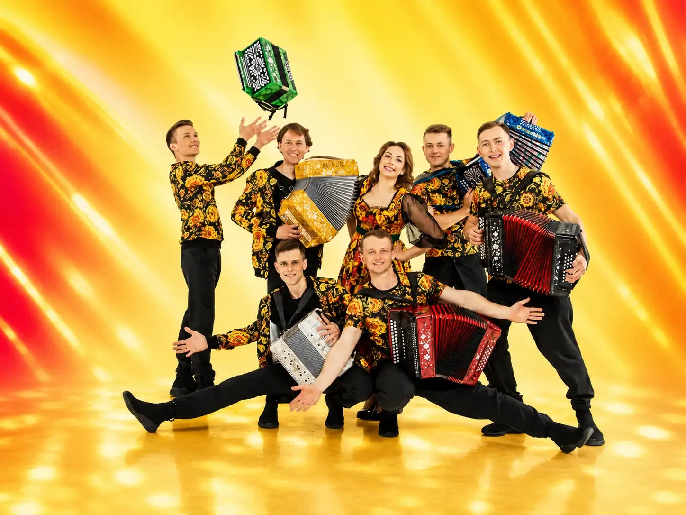

ЖИВОЙ ЗВУК
«Gармонь Drive» — вокально-инструментальный коллектив гармонистов-виртуозов. Народная музыка, авторские произведения, популярная классика и современная аранжировка соединяются в цельную концертную программу.
О НАС
«Gармонь Drive» — вокально-инструментальный коллектив гармонистов-виртуозов. Народная музыка, авторские произведения, популярная классика и современная аранжировка соединяются в цельную концертную программу.
Вокал, разные разновидности русской гармони и сценическое движение создают единый ансамбль. Каждый участник сохраняет собственную исполнительскую манеру.
Программа включает народные наигрыши регионов России, оригинальные сочинения, песни советской эстрады и переложения известных зарубежных мелодий.
Gармонь Drive / СЦЕНА / ЖИВОЙ ЗВУК
